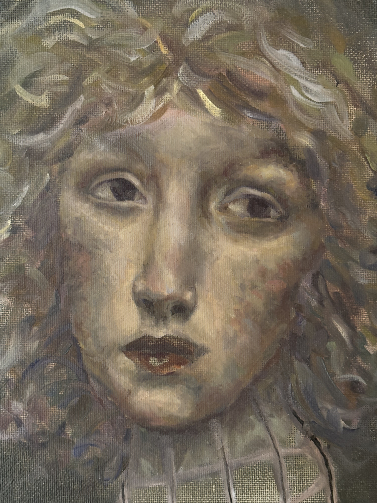
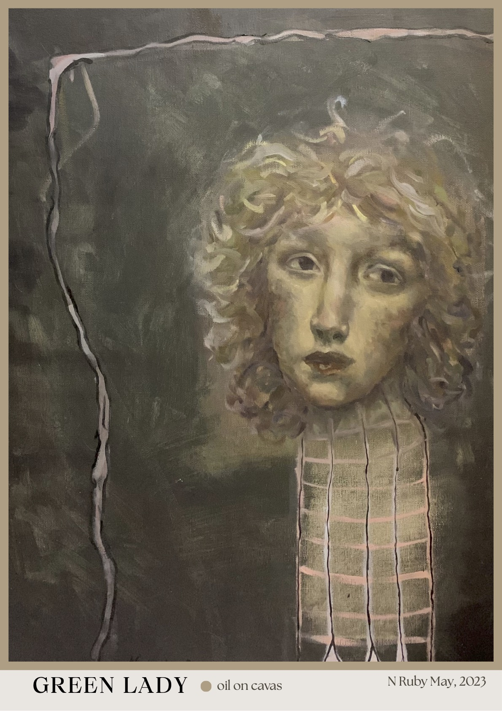

Green Lady portrait
This painting centres on emotion and quiet expression. To emphasise the subject’s subtle facial expressions, I removed traditional portrait colours and progressively abstracted the body beneath the face. I wanted this reduction to encourage the viewer’s attention to rest almost entirely on the subject’s expression, hoping to create a more intimate emotional engagement. The work draws inspiration from the emotionally monotone atmosphere of Pablo Picasso’s Blue Period, as well as the emotive portraiture of Ron Hicks. Through my restrained palette and simplified form, I aimed to create a contemplative mood.
completed 01/02/2023.
Oil on Canvas
40x51cm
$1,200
For purchase or further enquiries please email:
nrmbam05@gmail.com